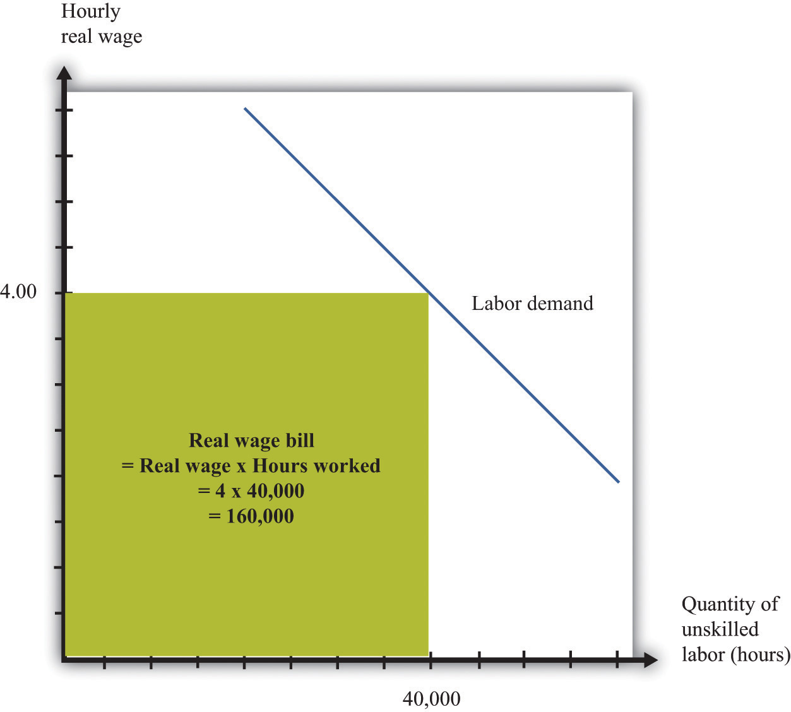
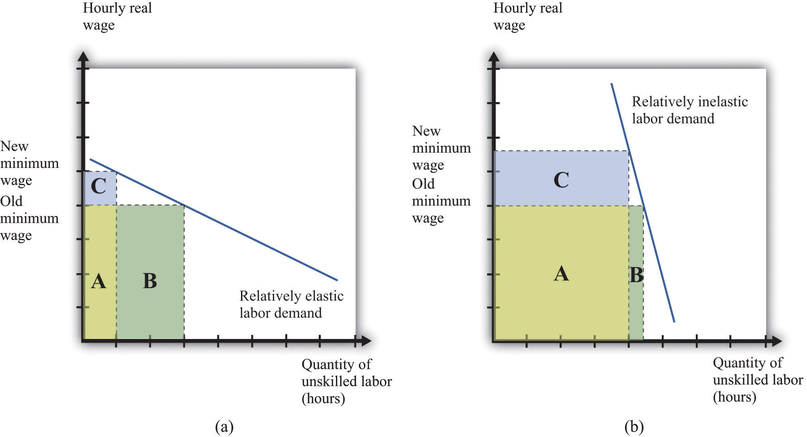

We said earlier that governments impose minimum wages because they care about ensuring that the working poor earn a fair wage. Another way of saying this is that the minimum wage is an intervention by the government that is meant to change the distribution of society’s resources. If unskilled workers are going to earn more, then this means they are obtaining more of the total resources available in an economy. And if they are getting more, then somebody else must be getting less. We would like to have some way of thinking about the effects of the minimum wage on the distribution of income.
To talk about distribution, we need to divide society into groups and then examine how much each group gets. One group is obviously those who receive the minimum wage—the working poor. Another group we need to consider is the unemployed. And then there is everybody else: all of those individuals who are sufficiently skilled to have jobs that pay more than the minimum wage. This is a large group, encompassing electricians and CEOs, but—for our present purposes—it makes sense to group them all together. Let’s call them the “relatively rich,” by which we mean that they are richer than unemployed or employed unskilled workers. So we have three groups: the unemployed, the working poor, and the relatively rich. How are these groups affected by an increase in the minimum wage?
We know that the working poor are made better off by an increase in the minimum wage—after all, the whole point of the increase is to ensure that these individuals earn more. We can see this gain in Figure 11.9 "Deadweight Loss from Minimum Wage": it is the extra surplus that sellers obtain at the expense of buyers. Remember, though, that some of the working poor will lose their jobs as a result of the higher minimum wage. So our first conclusion is that those members of the working poor who keep their jobs are unambiguously made better off.
The increase in the minimum wage means that there are more people who are unemployed. Those who are already unemployed are not directly affected by the increase in the minimum wage. These unemployed individuals may be indirectly affected, however, because it becomes harder for them to find jobs.
Are there any effects on the relatively rich? The answer is yes. The increase in the minimum wage means that firms will earn lower profits. We can see this because buyer surplus is reduced in Figure 11.9 "Deadweight Loss from Minimum Wage". Although firms are just legal entities, they are owned by individuals. When a firm earns lower profits, the shareholders of that firm receive lower income. The working poor and the unemployed are not, for the most part, individuals with portfolios of stocks; the shareholders of firms are the relatively rich. Thus the relatively rich are made worse off by the increase in the minimum wage. Our broad conclusion is therefore that the working poor benefit from an increase in the minimum wage, but everybody else in society is made worse off.
There is another concern when we think about the distribution of income. One consequence of the minimum wage is that jobs become a scarce resource: more people want jobs than there are jobs available. We must consider how this scarce resource is allocated. Do workers line up outside factory gates? In this case, the time that they spend waiting in line is an additional cost of the minimum wage. Does some individual control who gets hired? Then there is the potential for corruption, whereby jobs are sold, meaning that the gains from the minimum wage flow not to workers but to this individual instead.
We have concluded so far that the minimum wage benefits the working poor but at the cost of creating unemployment: some people who used to have jobs will lose them as a result of the minimum wage. Because of the flows between unemployment and employment in a dynamic labor market, it does not really make sense to think of the unemployed and the employed as different people. If we instead think about unskilled labor as a whole—a group that includes both those with jobs and those unable to find jobs—what can we conclude about the effects of an increase in the minimum wage? There are a few different ways of looking at this question.
First, we can look at total wages paid in the labor market, sometime called the wage bill. By looking at the wage bill, we can find out if the additional wages earned by the working poor exceed the wages lost by those who find themselves unemployed.
Total wages are equal to the total hours worked multiplied by the hourly wage:
total wages = real minimum wage × hours worked.Because we are measuring the wage in real terms, total wages are likewise measured in real terms. Figure 11.13 "The Wage Bill" provides a graphical interpretation of the wage bill: total wages paid are given by the shaded rectangle.
Figure 11.13 The Wage Bill
The wage bill is equal to the rectangle under the demand curve. For example, if the real wage is $4 per hour and employment is 40,000 hours, then the wage bill is 160,000.
From this equation it can be shown thatTo derive this equation, we first apply the rules of growth rates to obtainpercentage change in total wages = percentage change in real minimum wage + percentage change in hours worked.Then divide both terms by the percentage change in the minimum wage and use the definition of the elasticity of demand:
percentage change in total wages = percent change in real minimum wage × (1 – [–(elasticity of demand)]).The elasticity of demand is a negative number: if wages increase (that is, the change in the wage is positive), then hours worked decreases (that is, the change in hours worked is negative). It is therefore easier if we use –(elasticity of demand) because this is a positive number. The equation tells us that the change in the total wage is positive if the percentage increase in wages is greater than the percentage decrease in hours worked—in other words, if –(elasticity of demand) is less than 1.
If the demand for labor is relatively sensitive to changes in the wage, employment will decrease significantly following an increase in the minimum wage. Total wages paid will decrease. This is shown in part (a) of Figure 11.14 "Effects of an Increase in the Minimum Wage on the Wage Bill". Before the increase, total wages are given by the sum of areas A and B. After the increase, total wages are given by the sum of areas A and C. We get the opposite conclusion if labor demand is inelastic. In this case, an increase in the wage increases the total wages paid. The conclusion is intuitive: if employers do not change their hiring very much when wages increase, then total wages will increase. But if an increase in the minimum wage leads to a big decrease in the demand for labor, total wages paid will decrease.
Figure 11.14 Effects of an Increase in the Minimum Wage on the Wage Bill
If labor demand is relatively elastic (a), a change in the minimum wage leads to a reduction in the wage bill: the original wage bill is A + B, and the new wage bill is A + C. If labor demand is relatively inelastic (b), the same change in the minimum wage leads to an increase in the wage bill.
The wage bill tells us how much workers are paid in total. A better measure of the benefits obtained by workers is the total sellersellers’ surplus#8217;s surplus in the market. We cannot measure this exactly unless we know exactly what the labor supply curve looks like, but we can conclude that just looking at the wage bill understates the benefits to workers of the increased wage. The reason is simple and does not even need any diagrams. Following an increase in the minimum wage, workers work fewer hours in total. Everything else being the same, people prefer leisure time to working. For example, suppose that total wages increase following an increase in the minimum wage. Then workers gain twice: they are being paid more, and they are working less.
Even if total wages decrease, workers might still be better off. They might be more than compensated for the lower wages by the fact that they don’t have to work as many hours. We are not saying that having a job is a bad thing; those who are working prefer having a job to being unemployed. But those who are working also prefer working fewer hours.
So far, we have looked at the minimum wage through the lens of a competitive labor market. This is not a bad approach: as we have argued, the unskilled labor market is probably a reasonably good example of a competitive market. It is, however, a static way of thinking about the labor market, when the labor market is in fact highly dynamic.Chapter 9 "Growing Jobs" contains more discussion. People move in and out of jobs: they quit or are laid off from old jobs, and they search for new jobs. A worker who is employed this month may find herself unemployed next month; a worker with no job this month may be hired next month.
Earlier we claimed that an increase in the minimum wage has no direct effect on the unemployed. This is true in the static labor market picture, but once we take a more dynamic view of the labor market, it no longer makes very much sense to draw a hard-and-fast distinction between the employed and the unemployed. Over time, they will include many of the same people. So when we look at the distributional effects of the minimum wage, it is better to draw the distinction between unskilled workers (that is, the employed and unemployed together) and the relatively rich. With this in mind, let us now consider whether the unskilled as a group are likely to benefit from the minimum wage.
We might expect that unskilled workers will spend some of their time employed and some unemployed. When employed, they earn the minimum wage, but when unemployed, they receive much less. To keep things simple, suppose these workers earn nothing when unemployed. On average, the fraction of time that workers spend employed rather than unemployed is given by
We can think of this as the probability that a typical unskilled worker will be employed at any given time. Combining this with the idea of expected value, we can calculate the expected wage of such a worker. If a worker earns nothing when unemployed, then the expected wage is as follows:
Toolkit: Section 31.7 "Expected Value"
You can review probability and expected values in the toolkit.
How does this expected wage change when there is an increase in the minimum wage? The answer, as you might expect by now, depends on the elasticities of demand and supply. Specifically, it turns out that the expected wage will increase if
–(elasticity of labor demand) + elasticity of labor supply < 1.If both demand and supply are sufficiently inelastic, the average wage will increase. Conversely, if they are both relatively elastic, then expected wages will decrease.
There are some things missing from this story. In a more careful analysis, we would take into account the fact that workers are probably risk-averseBeing willing to pay more than a gamble’s expected loss in order to avoid that gamble. and dislike the randomness of their earnings. We would likewise take into account that unemployed workers obtain some income—perhaps from unemployment insurance. This actually makes it more likely that an increase in the minimum wage will increase the expected wage. These are details, however. We can draw two big conclusions from our discussion so far: